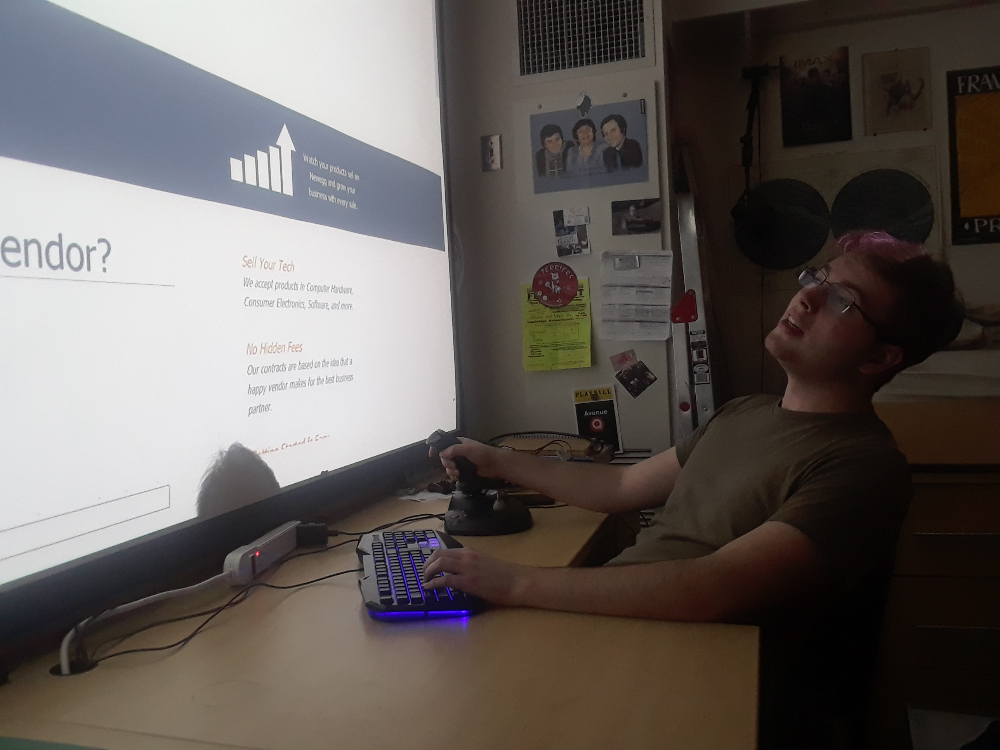
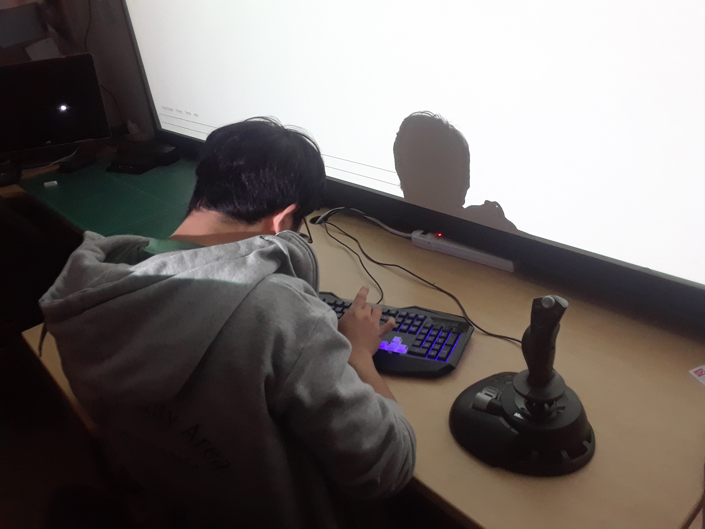
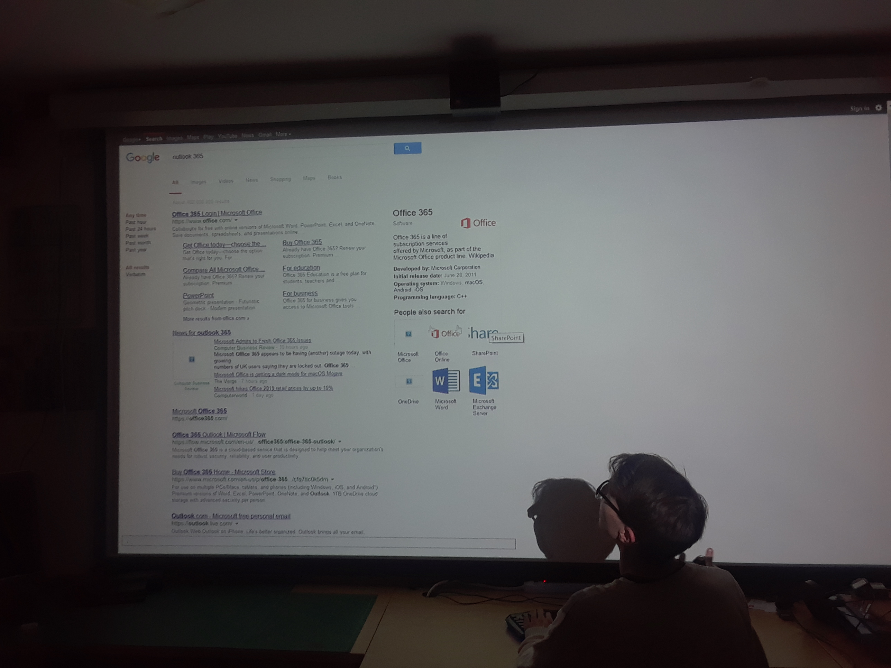

For this project we decided to explore the barrier of internet and computer literacy that often goes unseen. The internet is usually seen as a place where anyone can be who they want and everyone has a fairly equal opportunity. The overlooked fact is that people not experienced with computers or familiar with the internet are at a serious disadvantage. We sought to bring this issue to light by challenging Oliners – generally very computer- and internet-literate people – with an unfamiliar and confusing interface to the internet.
Participants used an unfamiliar keyboard – in this case one with a Dvorak layout – and an unusual and difficult-to-control mouse – here a joystick. The program they interacted with was an extremely barebones and slightly buggy browser with almost no interface components. The computer display was projected onto a nine foot screen just a few feet in front of the participant's face, to further increase the disorientation.
We gave each volunteer a few tasks that would have been trivial on their own machines. First, we asked them to send us an email. It took them much longer than usual to do so, and there were some creative strategies employed. Participants were timed, and it took them five to ten minutes to complete the task. Some participants could not remember their password or struggled with two-factor authentication, so they ended up subscribing us to emails from a random website, which at least caused us to receive an email, even if they didn't sent it. Several unsuccessful attempts frustrated a participant, triggering her to say she felt like her grandmother. Participants were also asked to try online shopping, searching for music/books, and finding good local restaurants. These tasks tended to be easier because of the lack of authentication.
Something that people found quite irritating was that our browser, written in python, sometimes did not open external links and often didn't display images. People also found it frustrating having to type "https://" for every web address because of the convenience modern browsers provide. Additionally, a lot of the features that make the online experience all the more convenient were missing in our browser, and that made participants go the long way around to complete tasks. For example, there was no "back" button.
From a physical interface perspective, participants had a hard time with both the keyboard and the mouse. Because of the sensitivity of the joystick, some volunteers had hard time clicking small check boxes and buttons. The keyboard was another major bottleneck, and volunteers were frustrated by the limited speed at which they could get information onto the page. Some quickly learned that they could copy the address for Google to the clipboard and paste it back to avoid typing it repeatedly. This type of "hack" showed us that we had not been entirely successful in corrupting the interface for experienced users: it still looked and felt like a computer and browser and the keyboard was still a keyboard, albeit an unfamiliar one to use.
Still, one of the participants estimated it took him 50 times longer to complete simple tasks than it would have on his own computer. He said that two factors, including difficulty adjusting to the sensitivity of the joystick, and the new keyboard layout made it challenging to do even simple chores on the internet. Overall, the experience was generally hard for people and they even felt a sense of achievement after completing tasks that we asked them to do. We had successfully created barrier for them to access the internet. We felt we were fairly successful in showing that users have leg up on using the internet simply by being accustomed to the interface.
